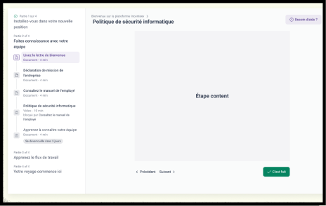
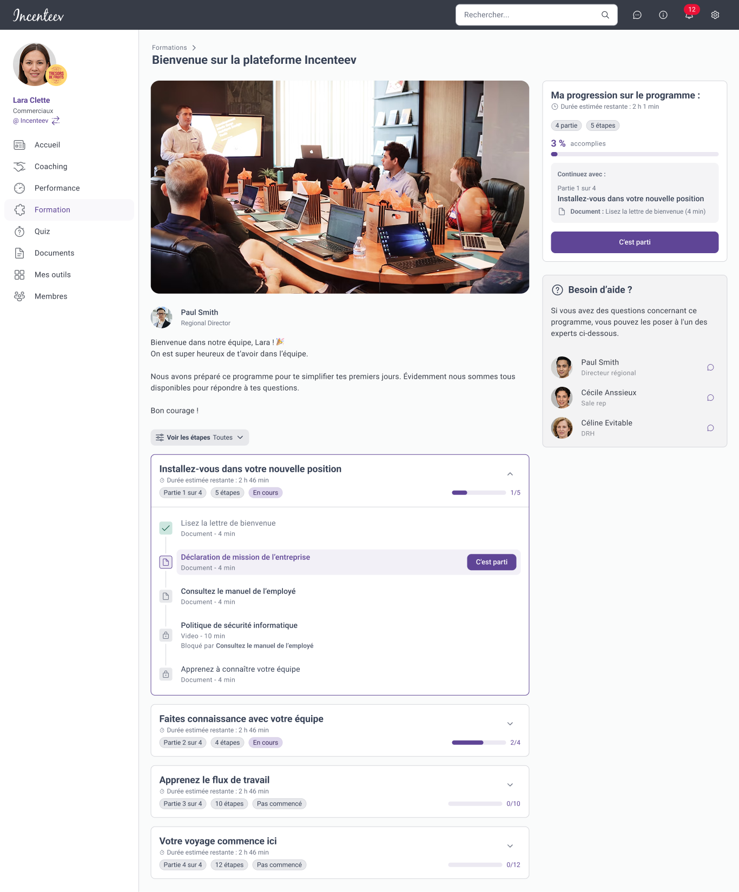
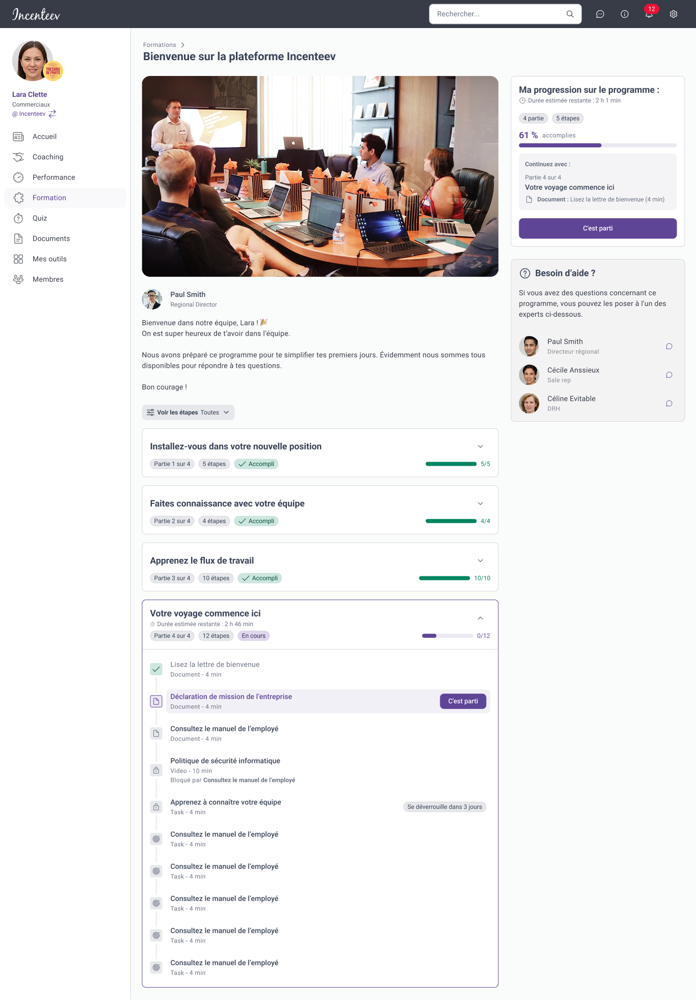
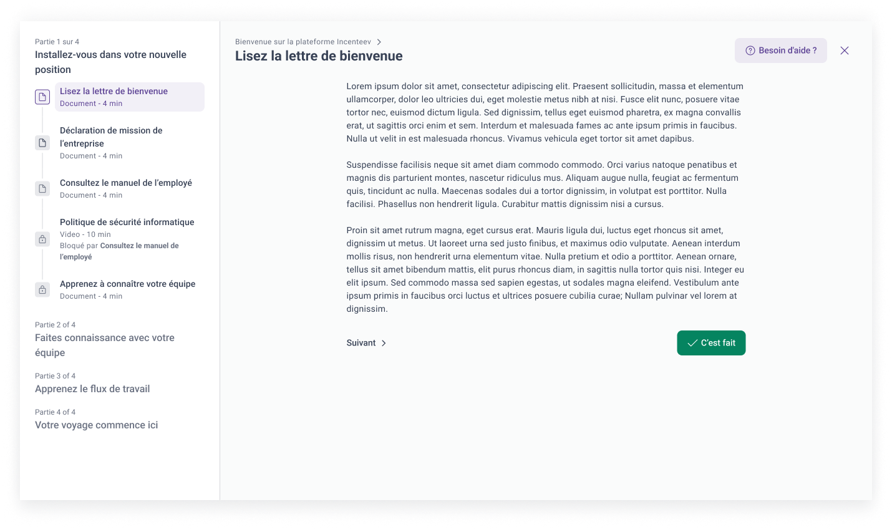
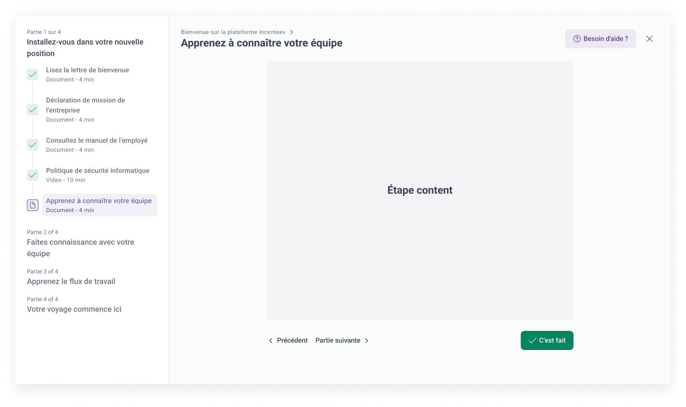
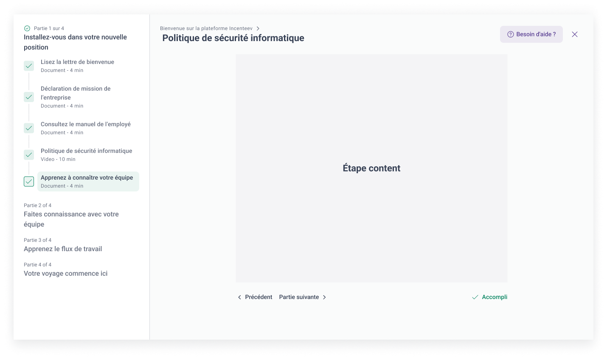
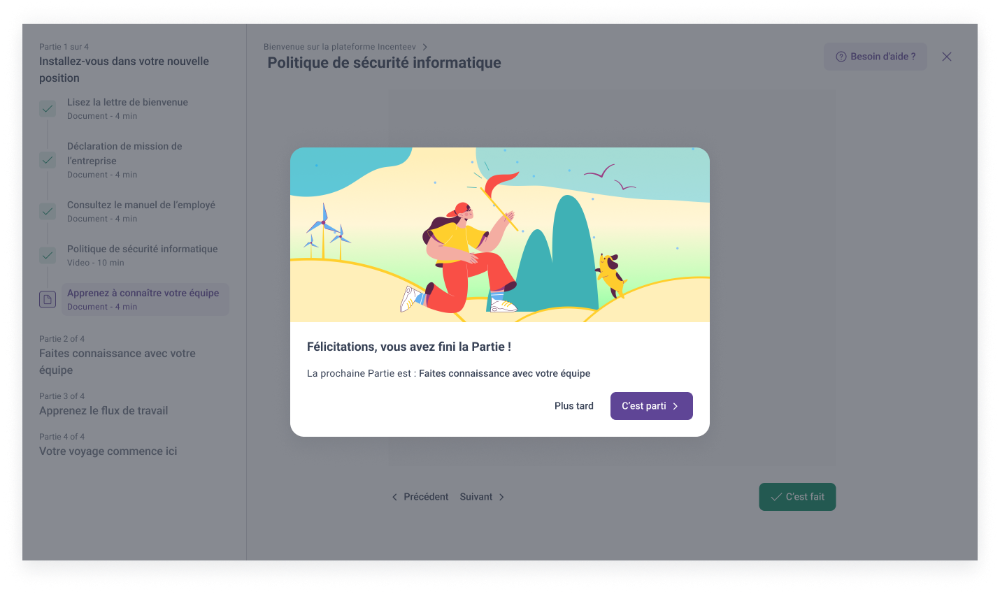

A UI/UX redesign of Programs, the training feature of the Incenteev platform. It had barely changed since launch, so the goal was to bring it up to the rest of the product and the new design system, without touching the backend.

1 monthDiscovery to final UI
PM + DesignerDiscovery team
0Backend changes
Context
Programs had been part of Incenteev since the very beginning and had never had a significant design update. Around it, the product kept moving: new features shipped, the design system was updated and platform expectations changed. Programs didn’t keep pace.
The result was a visual language that no longer matched the rest of the product, a UI that wasn’t pulling its weight, and good design resources that the feature wasn’t using. For all training users, that risked eroding trust and perceived quality.
Why now
Aligning with the broader design system rollout.
Improving adoption and engagement on an underused feature.
Maintaining the product’s quality perception as we scaled and brought in new users.
Scope
In: a UI/UX redesign of the Programs feature, with design and layout changes only.
Out: new functionality, backend, API or feature-logic changes, and other features.
What I did
Mined existing user feedback and filtered it with AI to isolate the UI-specific signals.
Ran user interviews with internal users focused on Programs UI pain points.
Led internal UX audit sessions across every Programs flow.
Benchmarked Coursera, Udemy and OpenClassrooms for modern learning patterns.
Ran a workshop with designers and PMs, then worked with our product designer through to the final UI.
Risks we framed
Some pain points could turn out to be structural rather than solvable through design alone.
Benchmark patterns might not fit our users, whose mental models differ from those of consumer learners.
Success signals
Increased engagement on Programs screens.
Fewer UI-related support tickets and complaints.
Positive feedback in post-launch interviews.
Screens

Program overview: progress, the next step and who to ask for help, all on one screen.

Further along, finished parts collapse so the current one stays in focus.

Step view: the program outline stays beside the content.

Completed steps are checked off in the outline as you go.

Marking a step as done.

Finishing a part: a short celebration and a clear way into the next one.